VIVEKA AND ANANDA
P. V. GAJAPATI RAJ
The
quest of all life is for eternal happiness. The sages have called this
happiness God-realisation, and the Vedas declare this to be an awareness of
one’s identification with Brahman. The question which has confronted man from
the beginning of time and which will continue to confront him is, “What is the
nature of Brahman?” The Brahmasutras open with 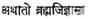 ‘And now we desire to know the nature of
Brahman.’ Bhagavan Sankaracharya
in his ‘Brahmasutra Bhashya’
tells us of the four prerequisites of an earnest aspirant to realisation: 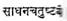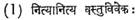 The ability to
discriminate between that which is eternal and that which is transient. 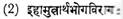 Dispassion towards the enjoyment of
objects both here and hereafter. 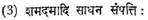 Wealth in the form of tranquillity, control, etc. 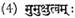 Desire for liberation. It would be seen
that the very first of these four qualifications for God-realisation is Viveka (discrimination).
Bhagavan Sankaracharya in the Viveka Chudamani, the Crest Jewel of Discrimination, reaffirms the
four prerequisites to the awareness of Brahman, and, in a sloka,
places discrimination at the forefront.
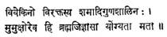
The
man who discriminates between the Real and the Unreal, whose mind is turned
away from the unreal, who possesses calmness and the allied virtues, and who is
longing for Liberation, is alone considered qualified to inquire after Brahman.
(Swami Madhavananda–Ramakrishna Math.) Sankaracharya clearly explains the significance of Viveka as follows:
A
firm conviction of the mind to the effect that Brahman is real and the universe
unreal is designated as discrimination (Viveka)
between the Real and the Unreal. (Swami Madhavananda–Ramakrishna
Math.)
One of the most
beautiful verses from the Kathopanishad is quoted
below:
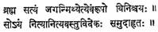
Both the good and the pleasant approach man; the wise one discriminates the two having examined them well. Yea, the wise man prefers the good to the pleasant, but the fool chooses the pleasant, through avarice and attachment. (Both the good, etc. The path of knowledge and the path of pleasure are ever laid before man, and he is also given the option to choose the one or the other. The wise man knows that the former leads to the eternal bliss of the Atman and freedom, and the latter to ephemeral sense-enjoyments and bondage; hence he prefers the former to the latter.) (Swami Sarvananada–Ramakrishna Math.)
The
word Vivinakti in the sloka
means ‘discriminates’ which is from the same root as Viveka.
The Lord of Death, Yama is telling the aspirant to
God-realisation, Nachiketas, that the wise man (Dheerah) discriminates between Sreyas
and Preyas. The word Dheerah
means more than just wise. It means fearless, courageous, dauntless, and wisdom
is only a result of these qualities. Lord Yama is
succinctly stating in this verse that discrimination in thought, word and deed
is necessary if man is to be called Dheerah. It must
be noted that discrimination is the ability to distinguish between Sreyas and Preyas. The question,
therefore, arises “How is man to recognise Sreyas in contrast to Preyas?” Shreyas can be said to be that which after deep
consideration man by his own conscience decides to be right, the best and the
highest. Preyas is the opposite and is generally
taken for that which is pleasant. Quite obviously, no man can do better than
live according to the dictates of his conscience, putting into effect that
which he himself decides is right. Such living is the real archana
(worship) that is offe:red
to one’s Ishta Devata
(chosen deity). There is not the slightest doubt according to Yama that in time such a person will realise
Brahman. The proposition is simple. In fact all great truths really are. By
examining every act, thought included, at every given moment of life with a
view to recognise the Sreyas
and Preyas of the act, and acting accordingly,
man truly can be deemed to be Dheerah. This is the
instruction of Yama.
Among
Hindus a wonderful custom exists. On the wedding night the husband and wife go
into the garden and the husband points out a tree, then a branch and a leaf. He
then asks his young bride to look skyward and shows her the Constellation of
the Great Bear (Saptarshi). The second of the stars
is pointed out and then the husband asks his wife to concentrate and try and
perceive a tiny star next to this second star in the Constellation. When she
sees the star, he tells her that the star is called Arundhati. Hindu philosophy
calls this method of drawing attention to that which is subtle through its
association with something more easily perceptible as Arundhati Nyaya (Vivekananda’s Complete
Works, Vol. IV, Page 349). This ceremony symbolises the husband pointing out to his wife that from
the wedding day onwards, they will spend their life searching for reality
together as Ardhanareeswara and that their search
will commence with a recognition of reality at the gross level of the tree,
branch and leaf and will then proceed to the subtler realms at the
Constellation and second star level, until ultimately the subtlest of concepts
will be realised, symbolised
in the Arundhati star. The significance of this simple ceremony is indeed
superb, for it portrays that the search for truth progresses in an orderly
fashion and if truth at the gross level is not realised,
then it certainly cannot be realised at the subtler
levels. The Taittiriya Upanishad also shows the
necessity for realising truth in a progressive
fashion, and Varuna instructs Bhrigu
in the realisation of Brahman by asking him first to realize Brahman at the
gross physical level of the Annamaya Kosa only then progress to realisation at the subtler
realms of Pranamaya, Manomaya,
Vijnanamaya and Anandamaya Kosas. The need for orderly progress is thereby emphasized.
Examples in this article will also be of a progressive nature.
The intellect
of a human being is that faculty which he possesses by which he is able to
discriminate. Viveka (discrimination) is the activity
of Buddhi (intellect). Lord Krishna in the 18th
Chapter of the Bhagavad Gita, slokas
30, 31 and 32, describes the Buddhi of the Sattvic, Rajasic and Tamasic (Pure, Passionate and Slothful) persons.
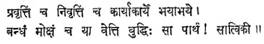
That
which knoweth activity and abstinence, what ought to
be done and what ought not to be done, fear and fearlessness, bondage and
liberation, that reason is pure, O Partha. (Ch. XVIII–30 Annie Besant and Bhagavan
Das.)
The
Satvik person is said to be able to discriminate
between the Pravritti and Nivritti
margas (activity and renunciation paths). The Pravritti marga is the path by
which man expresses himself to the world outside. Life commences with “Yours
not to question why, Yours but to do and die.” This
might be said to be equivalent to the Karmakanda or
ritualistic part of life. It has its own part in the refining of the intellect.
But the day comes when man begins to reflect inward. That by which he restrains
all activities is the Nivritti Marga.
The Nivritti Marga is also
known as the Sanyasa marga.
The renunciation of desire-prompted activities alone is Sanyasa.
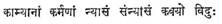
Sages
have known as renunciation the renouncing of desire-prompted works. (Gita Ch. XVIII-2, Besant and Bhagavan
Das.)
This
marga is a natural culmination in evolution.
The
man of Satvik Buddhi is
said to be able to differentiate between what ought and ought not to be done.
He takes the scriptures as his guide in determining the doability
of any act. Sri Krishna tells Arjuna,
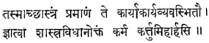
Therefore
let Scripture be thy authority, in determining what ought to be done or what
ought not to be done. Knowing what hath been declared by the ordinances of shastra thou oughtest to work in
this world. (Gita XVI-24, Besant and Bhagavan
Das.)
He
always bears in mind when determining the doability
of an act, the fact that his conscience in the final authority and therefore is
not hidebound by rules and regulations. He follows the advice of Kalidasa.
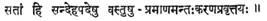
In
the case of the good, when doubts arise, the final authority is their
conscience. (Sakuntalam Act 1-22)
His
conduct is brought in line with his belief.
The
pure intellect is able to discriminate between fear and fearlessness. Most
people fear death, physical injury, loss of property, loss of reputation and
fame. The wise man fears more of these, though he respects all of these states
and lives in accordance with his respect. His fear is that of acquiring new Vasanas (tendencies or habits continuing through lives). He
fears even inadvertantly practising
Adharma. He studiously avoids any situation or
company in which he may be tempted to do that by which the veil of ignorance is
drawn a little tighter. Both Manu and Yajnavalkya in
their Smritis tell us of 13 (The five great
sins).
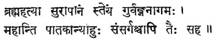
Killing
a Brahmana, drinking (the spirituous liquor called Sura), stealing (the gold of a Brahmana),
adultery with a Guru’s wife, and associating with such (offenders), they
declare (to be) mortal sins (mahapataka) – (The Laws of
Manu, George Buhler XI-55, p. 441.)
The
fifth of these sins is said to be ‘associating with those who perform the other
four’. The man of pure intellect therefore fears evil company. Shankaracharya tells us in sloka
9 of The Bhajagovindam 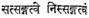 “Detachment arises from good company” and also
reiterates the same thing in sloka 2 of the Sopanapanchakam. 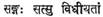 ‘Attachment to the company of the good is to
be cultivated.’ The meaning is quite clear. The man of right discrimination
avoids bad habits of all types at the physical mental and intellectual levels
such as liquor drinking, drug addiction, tobacco using, indiscriminate eating
and overeating, laziness and other bodily abuses; also lying, cheating,
jealousy, hatred, anger and all other negative emotions. He also refrains from
pleasure in gossip, trash books, cheap entertainments, etc. Most important, he
avoids the company of those who indulge in all the above. He is not afraid of
death, bodily injury, poverty, etc., for, he sees in all of these states
transience and he is aware of the fact that the real ‘He’ cannot be injured or
harmed.
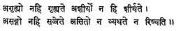
Brahman is imperceptible. It is never perceived, undecaying. It never decays, unattached, It
is never attached; unfettered, It neither feels pain nor can It be injured. (Brhd. U. IV. 5-15)
The
man of pure discrimination is able to recognise the
difference between Bandha and Moksha
(Bondage and Liberation). He is able to see the beauty of the Truth as
expressed in
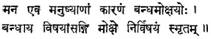
‘The mind of a man is the only (eva) cause for his being bound (by karma) or being Released; when the mind is enslaved by objects of pleasure, it is bound; and when it gets beyond these objects (becomes Nirvishaya) , that is, when it becomes desireless (nishkama), or unattached (nissanga), that is Release.’ (Gita Rahasya–B. G. Tilak, page 396: Maitreyu 6 : 34; Amntabmdu 2.)
He knows that Bondage is ignorance in the form of desire and Liberation is knowledge or freedom from desire. He recognises the necessity for the removal of ignorance in order to be liberated. He is fully aware of the fact that Moksha is not to be found in some particular place or town. He knows that Moksha cannot be given to him nor is it for sale. The Shiva Gita tells us:
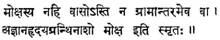
‘Release
is not in a particular place, nor has one to go to some other town or country
in order to obtain it: the destruction of the knot of Ignorance (ajnana) round our hearts is known as Release.’–Gita Rahasya–B. G. Tilak, page 343.)
He
sets about the removal of his ignorance in a methodical fashion.
He knows that wisdom will come to him by the practise
of Yoga and so he revels in such a realisation. Sri Krishna declares:
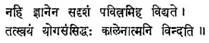
Verily there is no purifier in this world like wisdom; he that is perfected in yoga finds it in the Self in due season. (Gita Ch. IV-38, Besant and Bhagavan Das.)
He
is fully alive to the fact that the first signs of Yoga are noticeable in
physical well-being.
“Honouring the temple that is our body should be a constant
living thought of religion, instead of a piously spouted but pragmatically
almost meaningless phrase. Religion and psychology teach that you cannot live
right unless you think right. This idea is generally accepted as axiomatic, but
how many people realize that it may also be true that you cannot ‘think right’
unless you ‘live right?’ The social scientist
Lokamanya Tilak confirms the above views by declaring that the mind and
reason are only evolutes of Prakriti’ (Gita Rahasya, p. 1162). The Svetasvataropanishad Chapter II, Verse 13
says:
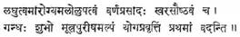
It is said
that the first signs of entering Yoga are lightness of body, health, thirstlessness of mind, clearness of complexion, a
beautiful voice, an agreeable odour and scantiness of
excretions (Swami Tyagisananda–Ramakrishna Math.)
In concluding
the description of the man of Satvik Buddhi we may once again reaffirm that he strives heart and
soul to live up to his carefully considered recognition of Sreyas
in all his acts.
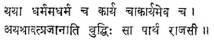
That
by which one understandeth awry Right and Wrong, and
also what ought to be done and what ought not to done, that reason O Partha! is passionate. (Gita Ch. XVIII-31, Besant and Bhagavan
Das.)
Sri
Krishna’s description of the Rajasic intellect is
indeed beautiful. Such a man knows the difference between Dharma and Adharma (Lawful and Unlawful) and Karya
and Akarya (legitimate and illegitimate action) but
does not act in accordance with his knowledge. Liquor is no good, tobacco is no
good, gambling is no good, overeating and sensual living are not right, etc.,
etc. BUT I enjoy them in moderation, and intend to continue doing so as I live
but once. Exercising regularly is good no doubt BUT I
have three children and am over forty. It is wrong to cheat BUT the Government
has taken away all incentive by its ridiculous taxation, so I am forced to cook
up my books. The difference between the Satvic and Rajasic Buddhi is three letters,
BUT He recognises right and wrong but invariably
justifies his conduct with a BUT. That this is so and that he cannot help
himself, is clearly evidenced in Sri Krishna’s reply to Arjuna’s
query regarding the same problem in the third chapter of the Gita slokas 36 and 37 as quoted below.
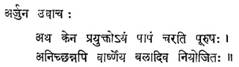
Arjuna said–But driven by
what does a man commit sin, reluctantly indeed, O Varshneya!
as it Were by force constrained?
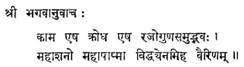
The blessed
Lord said–It is lust, it is hate, begotten by the quality of Rajas; all
consuming, all polluting, know thou this as (the great) foe here. (Gita–Besant and Bhagavan Das.)
Sri
Krishna describes the Tamasik Buddhi
as follows:
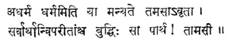
That
which, enwrapped in darkness; thinketh wrong to be
right, and seeth all things perverted, that reason, O
Partha! is of darkness. (
Our
friend with a Tamasic intellect sees everything in a
perverted fashion. He will rationalise his conduct in
the following manner. There is no doubt whatsoever that Alcohol and Tobacco in
moderation are good for you. Churchill smokes and drinks. What is wrong with
him? Everybody cheats the Government. Why not I? Nothing is wrong with it. Only
don’t be stupid enough to get caught. Anything in moderation is good. He little
realizes that anything ‘positive’ in moderation is good but never anything
‘negative’. Such a man has no desire at all to be told the truth. For such as him, Shankara truly says 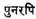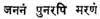 ‘Again
and again Birth and Death’ (Bhajagovindam, Sloka
21).
The
sum and substance of the entire Bhagavad Gita can be
found in that one superb sloka 47 of Chapter II.
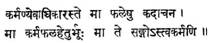
Thy
business is with action only, never with its fruits; so let not fruit of action
be thy motive, nor be thou to inaction attached. (Gita–Besant and Bhagavan Das.)
This
verse is so important that Sri Bala Gangadhara Tilak in his celebrated Gita Rahasya
(Vol. 1, p. 155) has this to say:
“These
doctrines are so important from the point of view of Karma-Yoga, that the four
quarters of the above stanza may be said to be the four aphorisims
(chatuhsutri) of the science of Karma-Yoga or of the
Gita Religion.”
The
most important question therefore is, What is the
method by which man is to decide how to act, since act he must. Constantly
remembering the law, viz., “The consequences of any act are concurrent
in and inherent in the Act,” he must discriminate and act. The results cannot
but be good for him who acts according to the dictates of discrimination
between Sreyas and Preyas
(Right and Wrong).
It
must once again be re-emphasized, that Ananda which
will arise out of Viveka, is assured for him who lives in accordance with his
highest capacity to discriminate. The Hitopadesa points
out the futility of mere scriptural learning without acting accordingly in a
couplet pregnant with meaning.
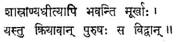
There
are many who, although having studied the scriptures, remain
fools. He alone who acts accordingly can be deemed to
be wise.
In
conclusion there can be no finer advice than that of Sri Krishna to all who
desire Moksha. Sri Krishna tells Arjuna
that any action performed without discrimination is indeed inferior. His injunction
is that man taking refuge in pure Viveka must Act...Act...and Act...
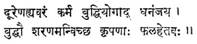
Far
lower than the Yoga of Discrimination is action, O Dhanan-jaya
Take thou refuge in Pure Reason; pitiable are they who work for fruit. (Gita Ch. II-49, Besant and Bhagavan
Das.)